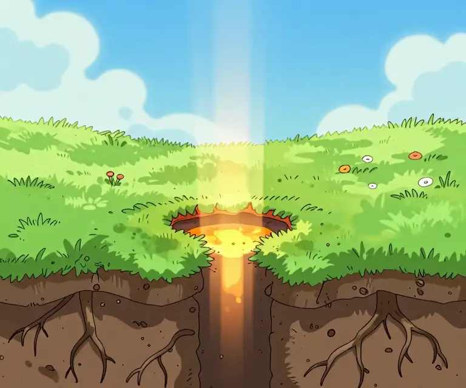

The Descent
The lore of Sick Of It, the way the hero got it: from a nice afternoon in the Meadow, down a hole, past ten Circles of Hell, to Floor 1,000. Scroll down. Hell is that way.
A hole in the meadow
A nice afternoon. The Overlord, ruler of Hell's 1,000 floors, rises over the hills. He wants the surface, and diamonds are what holds a portal open, so his imps loot the village's diamonds while his lasers burn the meadow flat. Standing in the middle of it: the hero. No name, on purpose. Thirties. Unimpressed.
- He clears the imps and the cinders off the grass, picks up a few diamonds, and gets his first taste of dragging time backward. He picks his first Grudge.
- The Overlord's lasers come down one last time. Not at the hero: at the ground beside him. The grass scorches, cracks, and tears open into a ring of burning turf with fire swirling down inside.
The OverlordMm. ... Stay.
- He walks over and peers down.
The heroThat's a hole.
The heroSo that's where they keep coming from.
- He cups a hand and shouts down it.
The heroHello?
Hell...hello? ...hello? ...hello?
His own voice, coming back deeper every time. Hell is repetition. Even its echo won't stop. - He turns to leave.
The heroNope.
The portal grabs him.The heroOh, come ON-
- A beat later a green village slime bounces past, wobbles at the edge, and is slurped in after him. Nobody remarks on it. His name is Yooba.

The portal flares and shrinks to a black scorch mark. Under it: a burning door, a tunnel of fire, and a very long way down.
The Throne Stair
The Overlord's palace and his half-built gate. Daylight leaks down the stairs from the meadow above.
- Residents
- The Overlord's own guard: everything, at its strongest.
- Warden
- The Overlord himself, Floor 1
The Keep
A courtyard, a dungeon, torches.
- Residents
- Jailers and Chains (rumoured)
- Warden
- ??? at Floor 101
The Bastion
Fortress walls and gates.
- Residents
- Garrison and Archers (rumoured)
- Warden
- ??? at Floor 201
The Dead Peaks
Moonlit mountains and candle shrines.
- Residents
- Gargoyles and Candle Monks (rumoured)
- Warden
- ??? at Floor 301
The Caverns
Drool and teeth. Floor 500 is the halfway mark.
- Residents
- Droolers and Lurkers (rumoured)
- Warden
- ??? at Floor 401
The Mire
A drowned graveyard under green ghost lights.
- Residents
- Wisps and Bog Hands (rumoured)
- Warden
- ??? at Floor 501
The Gloomwood
A dead forest, torches, and shadows with yellow eyes.
- Residents
- Shades: souls stuck repeating the same walk. They only hurt you if you stand in their loop. (rumoured)
- Warden
- ??? at Floor 601
The Rune Bridges
Glowing stone walkways over a void.
- Residents
- Watchers: floating eyes that guard the bridges (rumoured)
- Warden
- ??? at Floor 701
The Cracked Road
Black spires with glowing seams over a road that keeps splitting.
- Residents
- Brimstone Demons, born from the cracks
- Warden
- ??? at Floor 801
The Ember Wastes
Lava rivers where the portal spits out everything that falls through.
- Residents
- Imps (the Overlord's raiders) and cinders (sparks from the burning village)
- Warden
- The Magma King, Floor 901
WELCOME TO THE BOTTOM.
NINE HUNDRED NINETY-NINE TO GO.
The hero...Great.
That's where the game starts: the very bottom of Hell, with the Overlord at the very top, feeding the village's diamonds into a gate that will tear Hell open onto the surface for good. The way home is up. All of it, one floor at a time, counting down, with a floor boss every tenth floor. Yooba turns up after the Landing, coughing up a diamond. Hell keeps sending the hero back. He keeps coming back more annoyed.
The lore library
Everything we know about Hell so far. Wardens the hero hasn't met stay ???. Hell likes a surprise.
The story
The cast
Hell's residents

Hazards
Places
From the early builds
Monsters from the arcade version of the game, before Hell was surveyed. They're not on the climb today. Hell doesn't throw anything away.